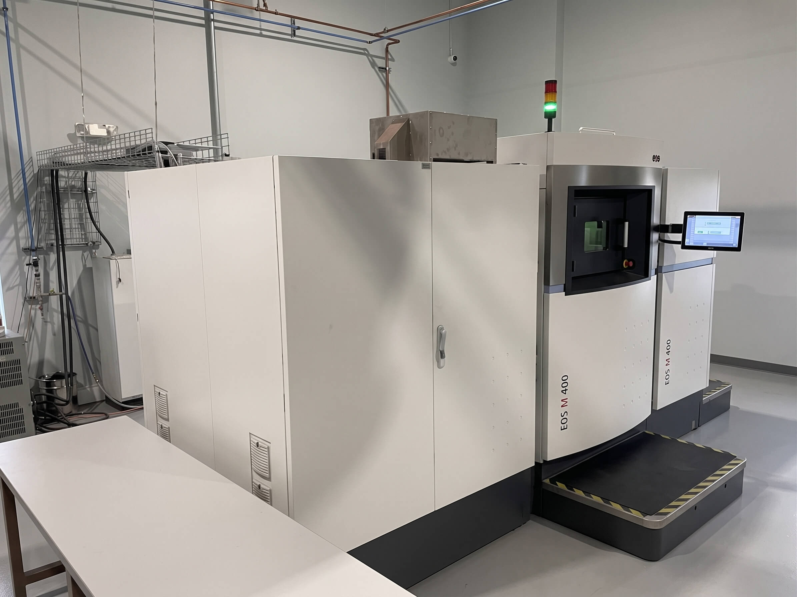
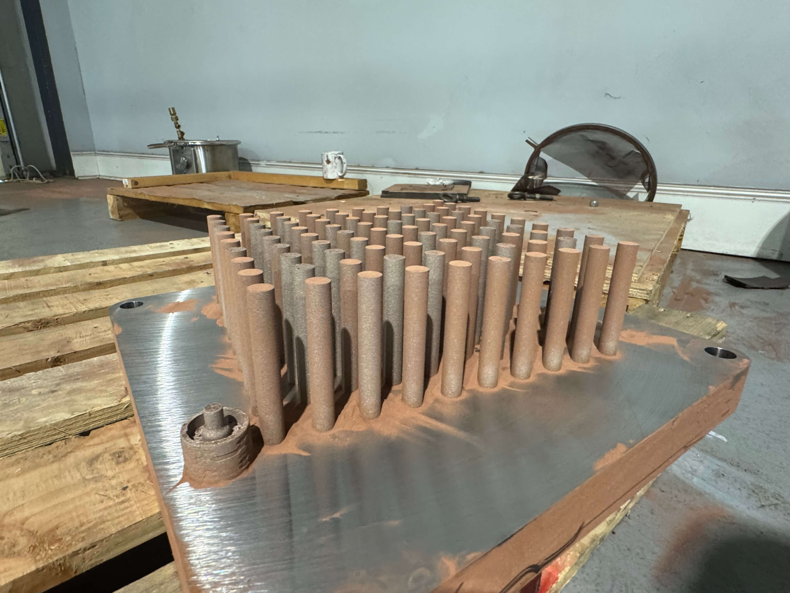
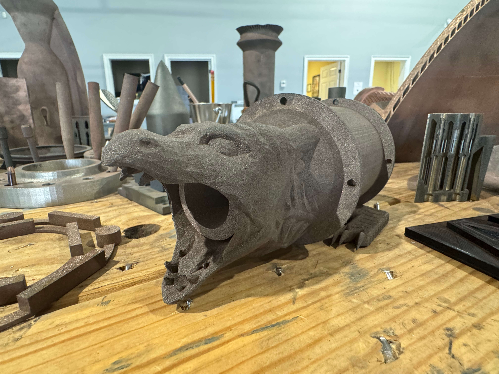
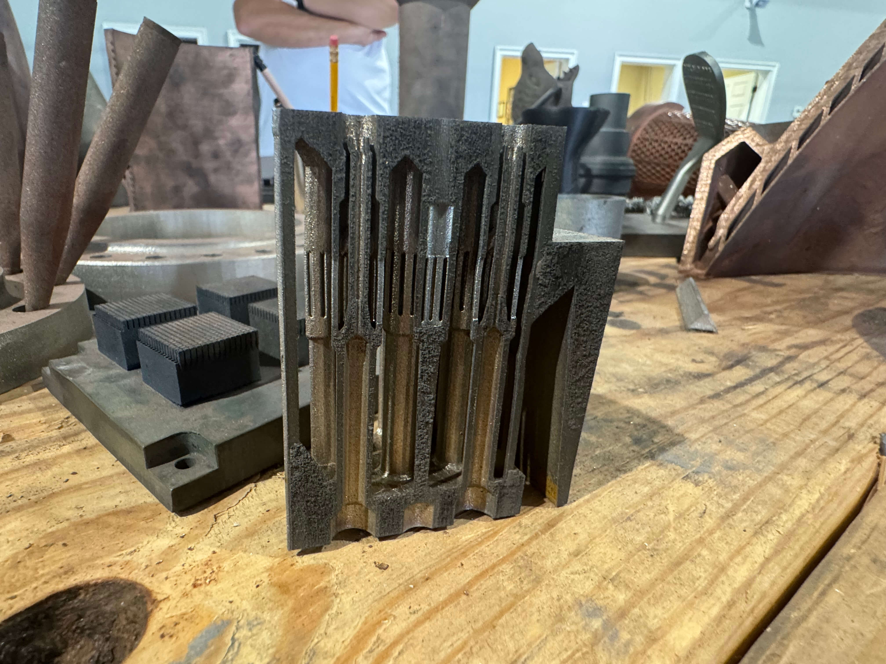

Laser powder bed fusion. Powder metal 3D printing at full density.
A 1 kilowatt laser melts metal powder 40 microns at a time, under argon, on an EOS M 400 with a 400 mm cube envelope. Here is how the process works, what it does well, and where it sits next to powder metallurgy.
Powder bed fusion is the process behind almost every metal 3D printed part that flies. It is what we run at AME, and it is the only process we run, which is why we know it well.

- Layer thickness
- 40microns, typical
- Laser power
- 1kW ytterbium fibre
- Scan speed
- 7metres per second, max
- As built density
- 99.5+percent of wrought
How laser powder bed fusion works.
- A layer of powder is spread. A recoater draws a layer of spherical, gas atomised metal powder across the build plate. On our machine a layer is typically 40 microns, about half the width of a human hair.
- The laser melts the cross section. A 1 kilowatt ytterbium fibre laser, focused to a spot around 90 microns across, scans the slice of the part at up to 7 metres per second. The powder melts completely and fuses to the layer beneath. This is a full melt, which is why the parts are dense.
- The plate drops one layer. The build platform lowers by one layer thickness, fresh powder is spread, and the next slice is melted. The scan pattern rotates 67 degrees between layers so that stresses do not line up.
- Repeat, for hours or days. A 400 mm tall build is ten thousand layers. The chamber stays flooded with argon throughout so the molten metal never sees oxygen.
- Cool, unpack, cut, treat. When the build finishes the plate cools under argon, loose powder is recovered and sieved for reuse, and the plate goes to stress relief before the parts are cut off it. Supports come off, and the parts go on to HIP, heat treatment, machining and finishing as the drawing requires.
LPBF, SLM, DMLS: one process, several names.
Laser powder bed fusion is the name in ISO/ASTM 52900, written PBF-LB/M for metal. Selective laser melting (SLM) and direct metal laser sintering (DMLS) are older trade names for the same thing; DMLS is the EOS term and appears on our machine. Despite the word sintering, DMLS on a modern machine melts the powder fully. If a supplier quotes you SLM, DMLS or LPBF they are describing the same process.
Is this powder metallurgy?
Yes and no, and the difference matters when you compare quotes. Powder metallurgy traditionally means pressing metal powder in a die and sintering it in a furnace, or injecting a powder and binder mix into a mould (metal injection moulding) and sintering that. Both start with powder, both end with a part that has shrunk in the furnace and kept some porosity.
Laser powder bed fusion starts with the same kind of powder and skips the sintering. The laser melts each layer into the last, so the part is fully dense when it leaves the machine, has not shrunk, and does not need a die or a mould. Binder jetting and bound metal filament are the additive processes that keep the sinter step, which is why their parts are cheaper per piece and weaker per gram. When a specification calls for powder metal 3D printing, ask which side of that line the supplier is on.
What LPBF does well.
- Internal channels and passages that follow the shape of the part, printed closed and leak tight.
- Thin walls to 0.5 mm, fine lattices and features a cutter cannot reach.
- Assemblies consolidated into one part with no brazed or welded joints.
- Alloys that are hard to machine, like Inconel 718, or hard to cast, like GRCop-42.
- One part through pilot volumes with no tooling and no change to the process between them.
Design rules that keep a build honest.
- Overhangs. Surfaces that lean more than about 45 degrees from vertical need supports or a redesign. Chamfers and teardrop holes are self supporting.
- Holes and channels. Horizontal round holes self support up to roughly 8 mm in diameter; above that, teardrop or diamond them. Internal channels need an exit so powder can be removed.
- Walls. 0.5 mm is achievable; 1 mm is comfortable for a structural wall. Keep thickness consistent to avoid distortion.
- Orientation. Height drives build time; downward facing surfaces are rougher; critical faces should point up or sit vertical.
- Machining stock. Add 0.5 to 1 mm on faces that will be finished to a tight tolerance.
- Residual stress. Every build is stress relieved on the plate before parts are cut free. Design for it: avoid long thin unsupported spans and abrupt section changes.
We check all of this before quoting. If a feature will not build, you hear about it with a proposed fix, not after the plate is unpacked.
The machine.
AME runs an EOS M 400: a single 1 kW ytterbium fibre laser over a 400 × 400 × 400 mm build envelope, under argon, with a scan speed of up to 7 m/s and a focus diameter of about 90 microns. It is the largest commercial metal additive platform in Alabama, and the same machine class the propulsion primes use. One machine, two alloys, run every week, is how you get to know a process.
Powder bed fusion next to the sintered processes.
All four start with metal powder. Only one finishes without a furnace.
| Process | How the powder is joined | Density | Shrinkage | Resolution | Typical use |
|---|---|---|---|---|---|
| Laser powder bed fusion | Full melt by laser, layer by layer | 99.5%+ as built, 99.9%+ after HIP | None; near net shape | 0.3 to 0.5 mm features, 40 µm layers | Flight hardware, complex channels, superalloys and copper |
| Binder jetting | Glued green part, sintered in a furnace | About 96 to 99% after sintering | 15 to 20% linear | About 0.5 mm, limited by sintering | Small parts in volume, steels |
| Metal injection moulding | Moulded green part, debound and sintered | About 96 to 99% | 15 to 20% linear | Fine, but needs a mould | High volume small parts |
| Press and sinter | Compacted in a die, sintered | About 85 to 95% | A few percent | Coarse, simple shapes | Bushings, gears, structural PM parts |



Questions we get asked.
What is laser powder bed fusion?
A metal 3D printing process in which a laser melts thin layers of metal powder, one on top of the last, until a solid part is built up on a plate. It runs under argon, uses layers around 40 microns thick, and produces fully dense parts in alloys such as Inconel 718 and GRCop-42.
Is LPBF the same as SLM and DMLS?
Yes. Selective laser melting (SLM) and direct metal laser sintering (DMLS) are trade names for laser powder bed fusion. ISO/ASTM 52900 calls it PBF-LB/M. The word sintering in DMLS is historical; the powder is fully melted.
What is the difference between powder bed fusion and binder jetting?
Powder bed fusion melts the powder with a laser and the part is dense when it leaves the machine. Binder jetting glues the powder with a liquid binder and then sinters the part in a furnace, where it shrinks 15 to 20 percent and keeps some porosity. Fusion costs more per part and gives better properties.
How accurate is powder bed fusion?
Typically ±0.1 to 0.2 mm on small features as built, with a length dependent allowance on larger dimensions. Features that need tighter tolerance are printed with stock and machined.
What metals can be used in LPBF?
Nickel superalloys, copper alloys, titanium, aluminium, stainless and tool steels, cobalt chrome and refractory metals have all been qualified. AME runs Inconel 718 and GRCop-42 and can add alloys for programs with the volume.
How strong are LPBF parts?
After heat treatment, comparable to wrought. ASTM F3055 sets minimum tensile properties for powder bed fusion Inconel 718 that HIP’d and aged parts meet. As built density is above 99.5 percent.
Does LPBF need support structures?
Yes, for surfaces that overhang more than about 45 degrees from vertical. Supports anchor the part to the plate, resist distortion and conduct heat away from the melt. They are removed after stress relief. Good design keeps them to a minimum.
Go deeper.
Metal 3D printing service
What the job includes, the specifications, and how to choose a shop.
PrimerMetal additive manufacturing
The process families, the standards, and where laser powder bed fusion fits.
MaterialInconel 718 3D printing
Composition, properties, heat treatment and ASTM F3055.
MaterialGRCop-42 3D printing
NASA’s copper alloy for chamber liners and injectors.
PricingMetal 3D printing cost
Six cost drivers, typical ranges, and how to bring the number down.
GuideFDM vs metal 3D printing
When plastic is enough, and when the part has to be metal.
Request a quote
Send the model. We’ll tell you if it builds.
Orientation, supports and an honest read on the geometry, from an engineer who runs the machine.